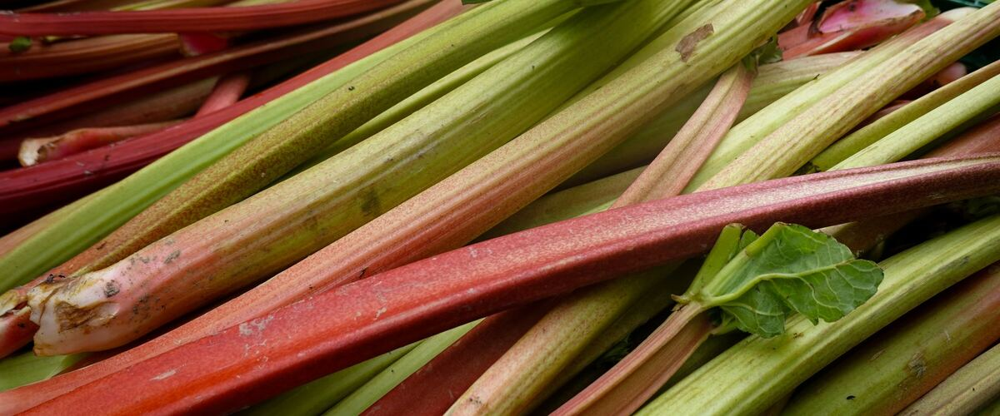

When to plant rhubarb in Cottage Grove, OR
Plant rhubarb crowns in Cottage Grove Mar 13 – Apr 24.
- Difficulty
- Easy
- Sun
- Full sun to part shade
- Spacing
- 3 to 4 feet apart
- Planting depth
- Crown buds 1 to 2 inches below the surface
- Frost
- Hardy perennial; comes back every year
- First harvest
- Light picking in year two; full harvests from year three
Why these dates
Cottage Grove's typical last spring frost is April 24. As a hardy perennial, this crop can go in about 6 weeks before that.
West-side valleys. The Willamette Valley, Puget Sound and southern Oregon valleys. Long frost-free seasons, but soil stays cold and wet into May, so warm crops wait for warm soil, not just the last frost.
How to grow rhubarb in Cottage Grove
- Pick a sunny spot with soil that drains well, and mix in an inch or two of compost.
- Plant rhubarb crowns Mar 13 – Apr 24, 3 to 4 feet apart. Crown buds 1 to 2 inches below the surface.
- Mulch with compost each spring, and cut off flower stalks as soon as they appear.
- Harvest: Pull (don't cut) stalks when they're 10 to 15 inches long. Take no more than a third at once, and stop in early summer. Never eat the leaves.
Key numbers
- 6.0–6.8Soil pH
- 10–15 inches longPull stalks at
- Every 5–10 yearsDivide
- Crown rot in wet soilBiggest risk
Top care tip: Pull stalks with a twist instead of cutting, and stop harvesting by midsummer so the plant can recover.
Growing notes
What makes the difference in Northwest gardens, in plain language.
Soil and feeding
Rhubarb is a hungry perennial that grows huge leaves every spring, so it rewards rich soil. Dig plenty of compost or aged manure into a wide area before planting, and spread a couple of inches of compost around the plant each spring, keeping it off the crown itself. Good drainage is essential: crowns rot in soggy winter soil, which is why west-side gardeners often plant on a low mound.
Rhubarb needs a cold winter to rest, which every part of the Northwest provides.
Harvest without weakening the plant
Pull stalks with a twist instead of cutting them, which leaves no stub to rot. Take no more than a third of the stalks at a time and stop in early summer, so the leaves that remain can rebuild the crown for next year. Thin, spindly stalks are a sign to stop sooner.
The leaves contain high levels of oxalic acid and are poisonous to eat, so cut them off and use only the stalks. Leaves are fine to put in the compost pile.
Care over the years
Cut flower stalks off at the base as soon as they appear; seed-making takes energy away from new leaves. Older plants flower more, and so do stressed ones.
After five to ten years, clumps get crowded and stalks get thinner. In early spring, just as buds swell, dig the crown and split it with a sharp spade into pieces that each have at least one or two buds and a good chunk of root. Replant them in fresh, enriched soil.
Common questions
When is the last frost in Cottage Grove, OR?
Typically April 24. In 9 years out of 10, frost is over by May 10. These are 1991–2020 NOAA climate normals for Cottage Grove.
Is it too late to plant rhubarb in Cottage Grove?
The spring planting window runs through April 24. Potted plants can still go in later if you water them faithfully through their first summer. Fall planting also works well here.
How long until I can pick rhubarb?
Light picking in year two; full harvests from year three. Pull (don't cut) stalks when they're 10 to 15 inches long. Take no more than a third at once, and stop in early summer. Never eat the leaves.
Why is my rhubarb flowering?
Mature plants flower naturally, and stress from heat, drought or poor soil makes it more likely. Cut the flower stalk off at the base right away. If a plant flowers heavily every year, it may be time to divide it.
Why are my rhubarb stalks green instead of red?
Color depends on the variety, not ripeness. Victoria is mostly green with red at the base, while Canada Red and Crimson Red are redder. Green stalks taste just as good, though they make paler pies and jam.
Can I put rhubarb leaves in my compost?
Yes. The oxalic acid that makes the leaves poisonous to eat breaks down during composting and doesn't harm the pile or your soil. Just don't feed them to people or animals.
Also plant in Cottage Grove around the same time
Planting dates for rhubarb in nearby areas
- Salem, OR Mar 1 – Apr 12
- Eugene, OR Mar 1 – Apr 12
- McMinnville and Newberg, OR Mar 4 – Apr 15
- Corvallis and Albany, OR Mar 1 – Apr 12
- Portland, OR Mar 1 – Apr 12
- Gresham, OR Mar 1 – Apr 12
Full planting calendar for Cottage Grove · Rhubarb in every city